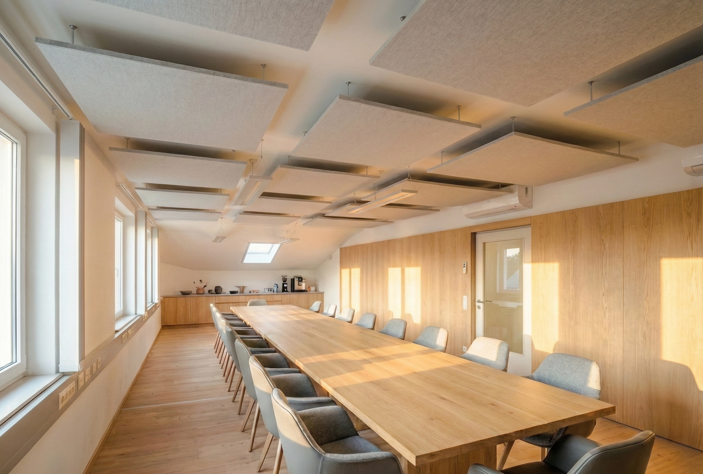
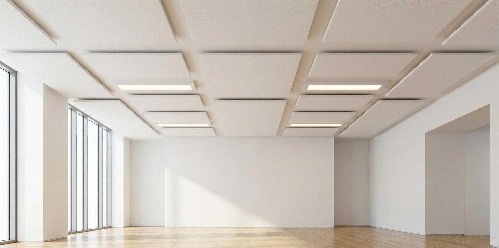
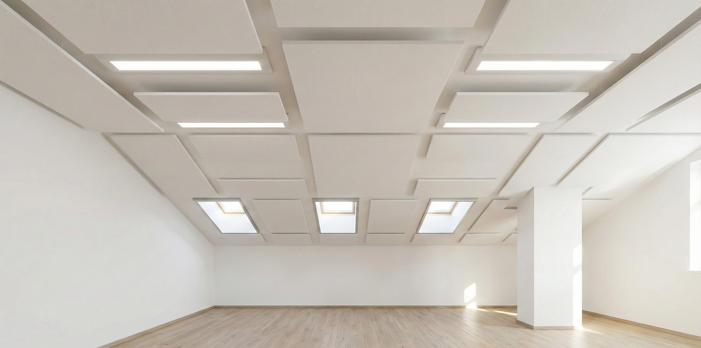

Standort
Kledering, Wien
Leistung
Raumakustik
Jahr
2020
Auftraggeber
Wieselthaler GmbH
Akustik, die Raum
für alles lässt.
Das Anlagenbauunternehmen Wieselthaler GmbH richtete für seine Mitarbeiter einen 150 m² Freizeitraum ein — für Meetings, Schulungen, Pausen und Freizeitaktivitäten. Hartboden, Betonwände und viele Fenster sorgten für Nachhallzeiten von bis zu 1,7 Sekunden. Gespräche und Schulungen im voll besetzten Raum waren eine echte Herausforderung.
Die Besonderheit des Projekts: Die Wandflächen sollten vollständig frei bleiben — für spätere Installationen wie Dartautomaten und Flipper. Coustiq entwickelte daher eine maßgefertigte Resonanzabsorber-Decke in CNC-gefrästem MDF (Holzoptik), die gezielt die störenden Frequenzen absorbiert, ohne den Raum akustisch totzudämpfen. Die Decke wurde in durchgehenden Bahnen verlegt — ein einheitliches, wohnliches Erscheinungsbild.
Nach der Montage durch unseren Tischlerpartner Griessler bestätigte die Nachmessung den Erfolg: RT60 bei 500 Hz von 1,35 s auf 0,54 s — eine Reduktion von 60 %. Der Raum wird heute täglich genutzt.
Ergebnis auf einen Blick
RT60 @ 500 Hz von 1,35 s auf 0,54 s gesenkt (−60 %) — nur Decke, keine Wandabsorber. Normkonform nach ÖNORM B 8115-3. Nachmessung bestätigt.

Akustik-Kennwerte
- Nachhallzeit vorher 1,35 s
- RT60 @ 500 Hz nachher 0,54 s
- Reduktion −60 %
- Raumgröße 150 m²
- Norm ÖNORM B 8115-3



Normkonform
Alle Zielwerte nach ÖNORM B 8115-3 nachweislich erreicht und dokumentiert.